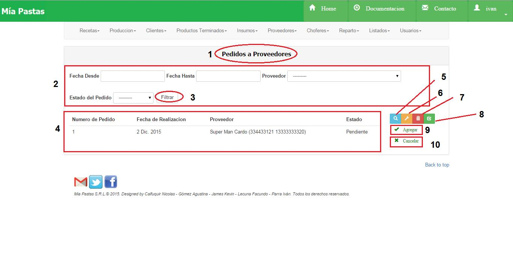
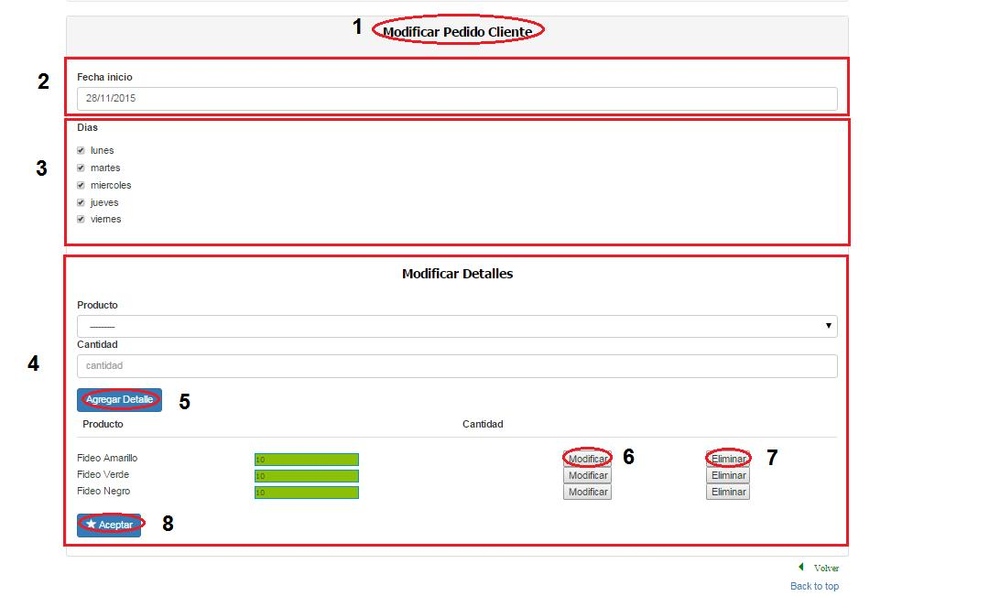
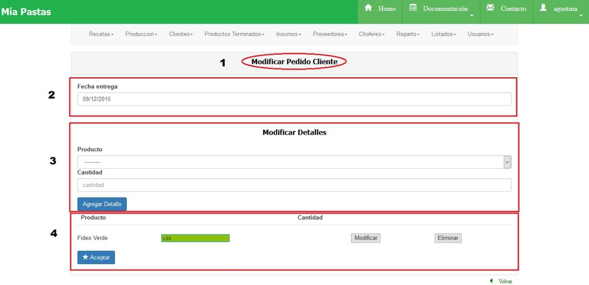

Pedidos de Clientes¶
- Nombre de la sección donde estamos ubicados.
2. Es el sector de filtrado, se podrá filtrar por fecha de creación del pedido, cliente que realizó el pedido, tipo de pedido (ocasional, fijo, por cambio) como así también por fecha inicio y fin. Se filtrará presionando el botón (3). 4. Área de resultado del filtro donde se mostrará tipo de pedido, cliente y fecha del ítem seleccionado. De no haberse realizado ningún filtro mostrará todos los pedidos de todos los clientes. Al hacer click en Cliente mostrará todos los datos del cliente asociado. 5. El icono de lupa sirve para mostrar más detalle sobre el ítem seleccionado como se muestra en la siguiente figura. De no seleccionar previamente un ítem aparecerá un mensaje de error. 6. El icono de llave sirve para realizar una modificación sobre el ítem seleccionado. Para esto se deberá hacer click previamente sobre el ítem deseado. De no seleccionar previamente un ítem aparecerá un mensaje de error. 7. Para eliminar un pedido, deberemos seleccionar un elemento de la tabla de filtrados, y hacer click sobre el botón 7 (de la Pantalla Principal de Pedidos de Cliente). 8. Dar de Alta un nuevo pedido fijo 9. Dar de alta un nuevo pedido ocasional 10. Dar de alta un pedido de cambio
Consultar Pedidos de Cliente¶
Seleccionar un pedido a proveedor haciendo click sobre el deseado y sobre el ícono de lupa.
(1) Nombre de la sección en la que nos ubicamos, (2) descripción del pedido consultado (3), detalle de los productos del pedido. Consultar Pedido a Proveedores
Pantalla de Consulta Pedido Fijo¶

- Nombre de la sección en la que nos ubicamos, (2) descripción del pedido consultado (3), detalle de los productos del pedido.
Pantalla de Consulta Pedido Ocasional o por Cambio¶

- Nombre de la sección en la que nos ubicamos, (2) descripción del pedido consultado (3), detalle de los productos del pedido.
Modificar Pedidos Fijos de Clientes¶
- Nombre de la sección en la que nos ubicamos, (2) fecha de inicio del pedido, (3) días de entrega del pedido, (4) detalles del producto a agregar y cantidad, listado de todos los productos agregados con su cantidad.
- Observaciones: No se puede eliminar un día del pedido fijo si éste es el único día.
Modificar Pedidos Ocasionales o por Cambio de Clientes¶
- Nombre de la sección en la que nos ubicamos, (2) fecha de entrega del pedido, (3) detalle del producto a agregar al pedido con su cantidad, (4)detalles de todos los productos agregados y su cantidad.
- Observaciones: No se pueden modificar pedidos que ya fueron recepcionados.
Eliminar Pedidos de Cliente¶

Altas de Pedidos de Clientes¶
- Pedido fijo

- Nombre de la sección en la que nos ubicamos, (2) datos del cliente a asignarle el pedido, fecha de inicio del pedido, fecha de cancelación en caso de ser por determinado periodo, días en los que se entregará el pedido, (3) detalle del producto a agregar, (4) el botón de confirmación, listado de todos los productos agregados con la cantidad, (5) botón para modificar la cantidad, (6) botón para eliminar ese producto, (7) botón de confirmación.
- Pedido ocasional
- Nombre de la sección en la que nos ubicamos, (2) datos del cliente a asignarle el pedido, fecha de entrega, (3) sección de detalles de los productos, (4) detalle del producto a agregar, con el botón de confirmación, listado de todos los productos agregados con la cantidad, (5) botón para modificar la cantidad, (6)botón para eliminar ese producto, (7) botón de confirmación.
- Pedido cambio
- Nombre de la sección en la que nos ubicamos, (2) datos del cliente a asignarle el pedido, fecha de entrega, (3) sección de detalles de los productos, (4) detalle del producto a agregar, con el botón de confirmación, listado de todos los productos agregados con la cantidad, (5) botón para modificar la cantidad, (6) botón para eliminar ese producto, (7) botón de confirmación.
- Observaciones: No se podrá registrar en el pedido un producto por duplicado. No se podrá registrar un pedido que no tenga ningún producto.